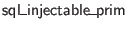
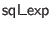

Tables may be declared with constraints, such that database modifications that violate the constraints are blocked. A table may have at most one PRIMARY KEY constraint, which gives the subset of columns that will most often be used to look up individual rows in the table.
The type class  characterizes which types are allowed in SQL and are not types. In SQL, a PRIMARY KEY constraint enforces after-the-fact that a column may not contain NULLs, but Ur/Web forces that information to be included in table types from the beginning. Thus, the only effect of this kind of constraint in Ur/Web is to enforce uniqueness of the given key within the table.
A type family stands for sets of named constraints of the remaining varieties.
The first argument gives the column types of the table being constrained, and the second argument maps constraint names to the keys that they define. Constraints that don't define keys are mapped to ``empty keys.''
There is a type family of individual, unnamed constraints.
The first argument is the same as above, and the second argument gives the key columns for just this constraint.
We have operations for assembling constraints into constraint sets.
A UNIQUE constraint forces a set of columns to be a key, which means that no combination of column values may occur more than once in the table. The and arguments are separated out only to ensure that empty UNIQUE constraints are rejected.
A FOREIGN KEY constraint connects a set of local columns to a local or remote key, enforcing that the local columns always reference an existent row of the foreign key's table. A local column of type may be linked to a foreign column of type , and vice versa. We formalize that notion with a type class.
The type family uses to define when two keys match up type-wise.
SQL provides a number of different propagation modes for FOREIGN KEY constraints, governing what happens when a row containing a still-referenced foreign key value is deleted or modified to have a different key value. The argument of a propagation mode's type gives the local key type.
Finally, we put these ingredient together to define the FOREIGN KEY constraint function.
The last kind of constraint is a CHECK constraint, which attaches a boolean invariant over a row's contents. It is defined using the  type family, which we discuss in more detail below.
Section 9.1.1 shows the expanded syntax of the declaration and signature item that includes constraints. There is no other way to use constraints with SQL in Ur/Web.